Start here · เริ่มอ่านที่นี่
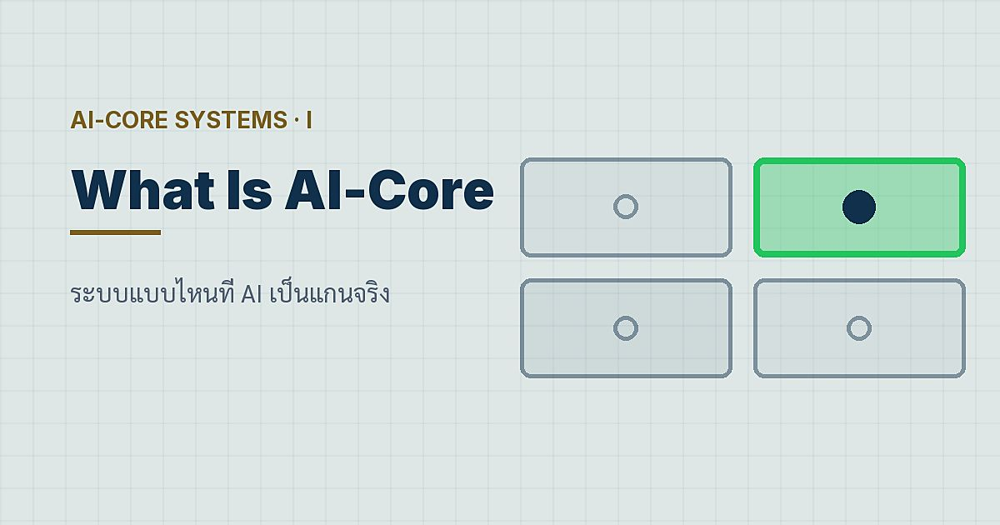
New series · ซีรีส์ใหม่ · 8 Sep 2026 · Engineering AI-Core Systems · Post 1 of 10
What Is an AI-Core System? — ระบบแบบไหนที่ AI เป็นแกนจริง
แยก AI-assisted coding, coding agent, AI-enabled และ AI-core ให้ขาด แล้วใช้สองแกน อำนาจตัดสินใจ × ความขาดไม่ได้ จำแนกระบบลงสี่ช่องพร้อมภาระของแต่ละช่อง
Read อ่านต่อ →Choose a series · เลือกซีรีส์
Engineering AI-Core Systems
A zero-to-hero engineering course from the author's own paper — classify, design, contract, guard and prove a system whose core is a language model. คอร์สวิศวกรรมจากศูนย์ถึงมือโปร อิงเปเปอร์ของผู้เขียนเอง — จำแนก ออกแบบ ทำสัญญา วางการ์ด และพิสูจน์ระบบที่มีโมเดลภาษาเป็นแกน ตอนละ 7 ขั้นลงมือจริง
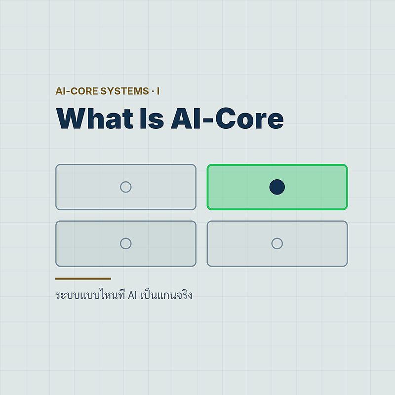
What Is an AI-Core System? — ระบบแบบไหนที่ AI เป็นแกนจริง
แยก AI-assisted coding, coding agent, AI-enabled และ AI-core ให้ขาด แล้วใช้สองแกน อำนาจตัดสินใจ × ความขาดไม่ได้ จำแนกระบบลงสี่ช่องพร้อมภาระของแต่ละช่อง
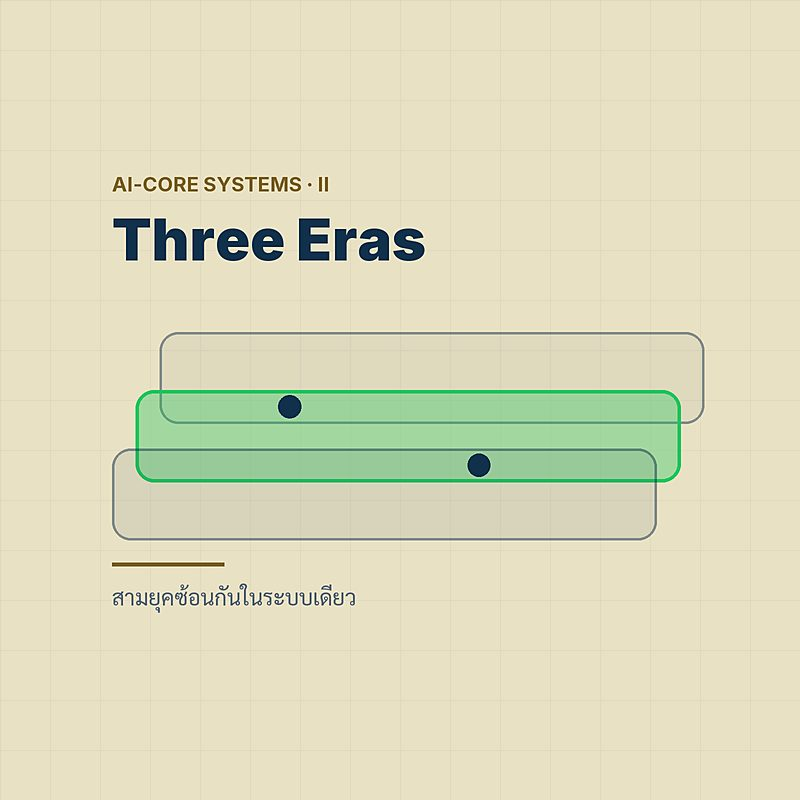
Software 1.0 · 2.0 · 3.0 — สามยุคซ้อนกันในระบบเดียว
สามยุคของซอฟต์แวร์ไม่แทนที่กันแต่ซ้อนกันในระบบเดียว — ทำบัญชี artifact ระบุชั้นที่คุมพฤติกรรม และอ่านลายเซ็นความล้มเหลวของ 1.0, 2.0 และ 3.0 ให้ออก
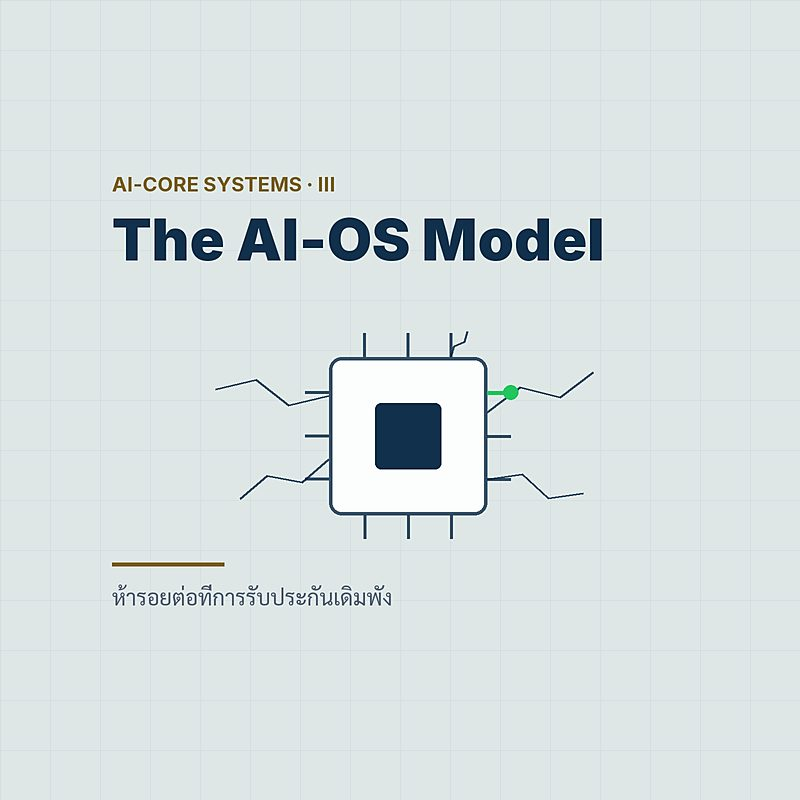
The AI-OS Mental Model — ห้ารอยต่อที่การรับประกันเดิมพัง
weights=CPU, context=RAM, RAG=ไฟล์ซิสเต็ม, tool call=system call — อุปมาที่ดีจนอันตราย เพราะรอยต่อทั้งห้าที่มันพังคือจุดที่ต้องวางการควบคุมทั้งหมด
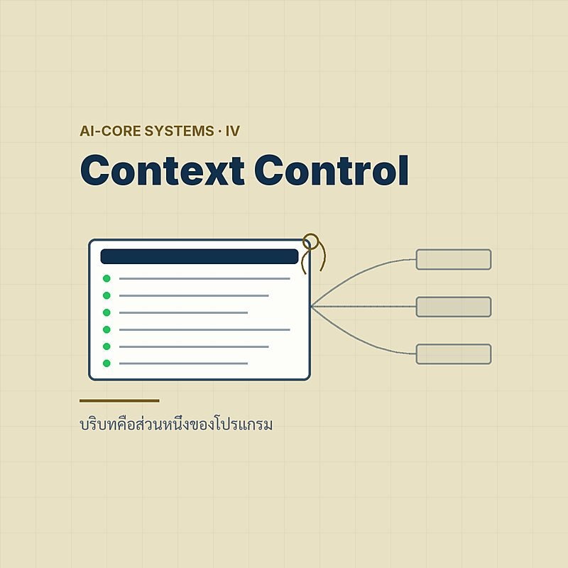
Context Is a Control Artifact — บริบทคือส่วนหนึ่งของโปรแกรม
พฤติกรรมของระบบมาจากทุกพจน์ของสมการเดียว — prompts, corpus, tool schema, decoding ล้วนเป็นโปรแกรม จึงต้อง version รีวิว และปล่อยพร้อมกันใน manifest เดียว

Design for the Fallible Savant — ออกแบบเผื่ออัจฉริยะที่พลาดเป็น
แกน AI คืออัจฉริยะที่พลาดเป็น — แต่งเรื่องได้ เก่งไม่สม่ำเสมอ จำไม่ได้ หูเบา และมั่นใจเกินจริง บทนี้เปลี่ยนทั้งห้าข้อให้เป็นข้อกำหนดการออกแบบของ envelope
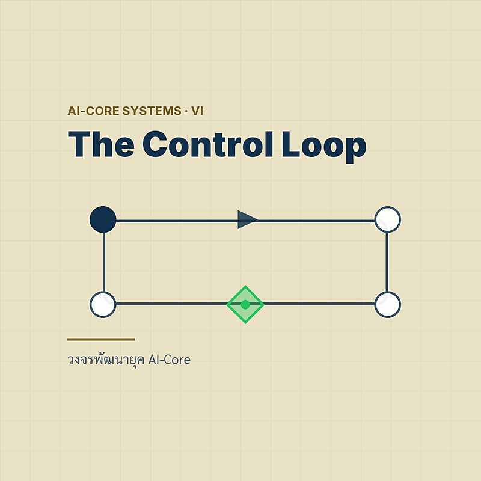
Specify → Constrain → Generate → Verify — วงจรพัฒนายุค AI-Core
เขียน ai_core_operation() จริงทีละท่อน — precheck ที่ปฏิเสธก่อนถึงโมเดล execution guard ก่อนผลจริง เกณฑ์ตัดสินก่อนปล่อย และ trace ทุกเส้นทางรวมทั้งตอนพัง
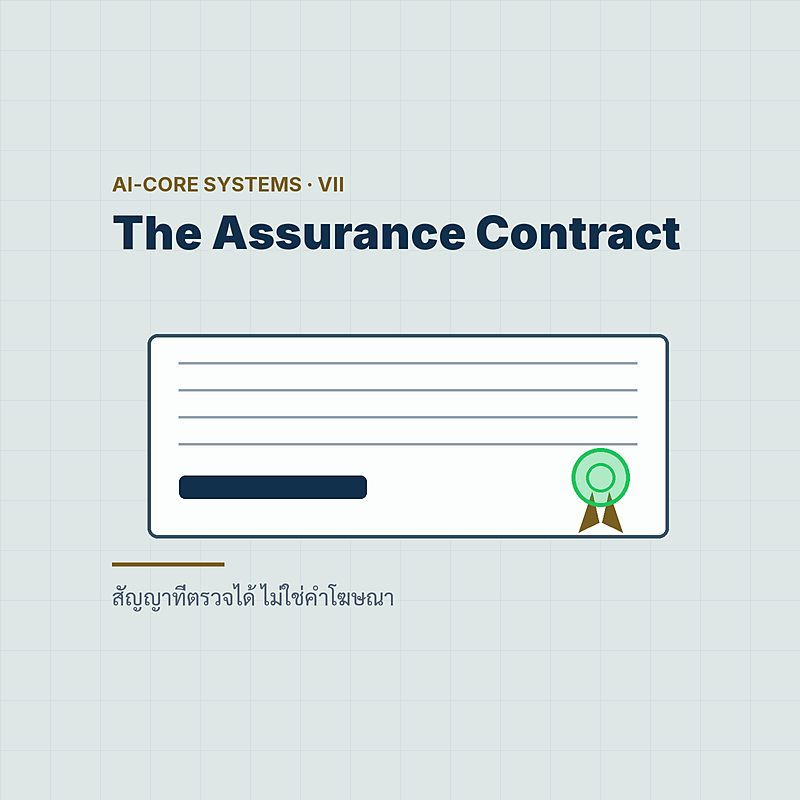
Write the Assurance Contract — สัญญาที่ตรวจได้ ไม่ใช่คำโฆษณา
สัญญาการรับประกันเชิงระบบเขียนทีละคุณสมบัติ — แยกสิ่งที่บังคับได้จริงออกจากค่าประเมิน กำหนดหลักฐาน เจ้าของ threshold และการตอบสนองเมื่อผิดสัญญา
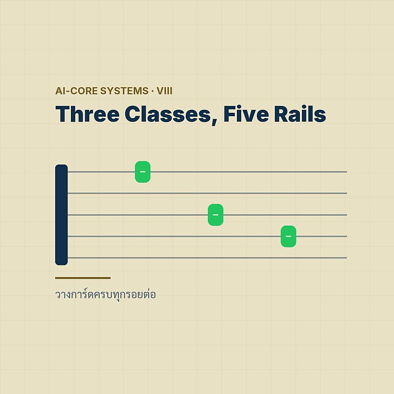
Three Control Classes, Five Rails — วางการ์ดครบทุกรอยต่อ
การ์ดไม่ได้มีชนิดเดียว — hard enforcement, soft detection และ governance วางบนห้ารางของเส้นทางคำขอ แต่ละรางมีสิ่งที่กันได้จริงและความเสี่ยงคงเหลือของมันเอง
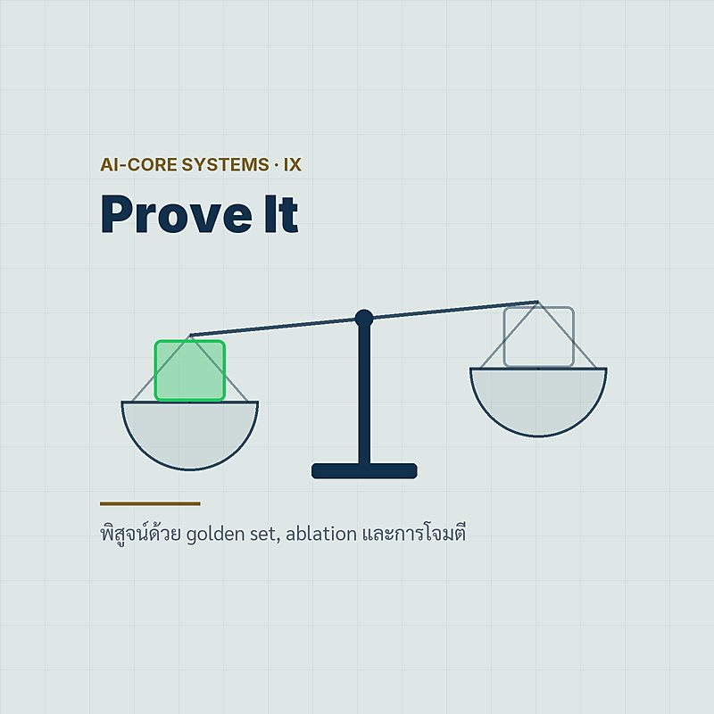
Prove It — golden set, ablation และการโจมตีที่รู้ไส้ระบบ
สร้าง harness แบบเปเปอร์ — เทียบ full กับ bare ใช้ oracle ที่ดู post-state ไม่ใช่คำเล่าของโมเดล ถอดการ์ดทีละตัว โจมตีแบบรู้ไส้ และทดสอบ refund ซ้ำให้ล้มแบบปิด

Ship It — คันเร่งอิสระ งานปฏิบัติการ และเช็กลิสต์ก่อนปล่อย
ก่อนปล่อยจริง — จับคู่ระดับอิสระกับความย้อนกลับได้ของผลกระทบ ตั้งงบความเสี่ยงต่อ action class เตรียม rollback และตอบเช็กลิสต์ 10 ข้อด้วยหลักฐานจริง
Hermes Desktop Hands-On
Install and run Nous Research's Hermes Desktop on your own machine, screen by screen. ติดตั้งและใช้ Hermes Desktop บนเครื่องของเราเองทีละหน้าจอ — โมเดลบนเครื่อง โปรไฟล์ สภาตรวจคำตอบ และงานอัตโนมัติ
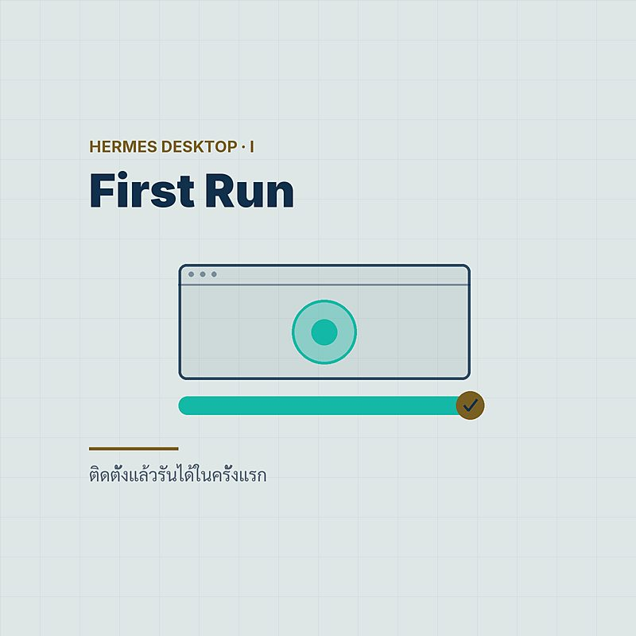
Install & First Run — ติดตั้งแล้วรันได้ในครั้งแรก
ติดตั้ง Hermes Desktop บน macOS, Windows หรือ Linux ทีละหน้าจอ — ตั้งแต่ดาวน์โหลด onboarding ข้อความแรก จนถึงวิธีเช็กว่าทุกอย่างทำงาน
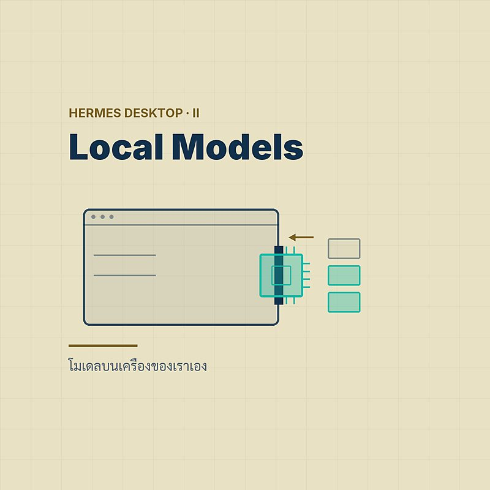
Local Models — โมเดลบนเครื่องของเราเอง
รัน Hermes Desktop ด้วยโมเดลบนเครื่องของเราเอง — managed llama.cpp แบบคลิกเดียว, LM Studio หรือ Ollama/vLLM ผ่าน Custom endpoint พร้อมกฎ 64K

Profiles — หนึ่ง agent ต่อหนึ่งบทบาท
สร้าง profile ใน Hermes Desktop ทีละขั้น — Bot ต่อบทบาท, SOUL.md, โฟลเดอร์งาน, โมเดลต่อ profile และการย้าย profile ข้ามเครื่อง
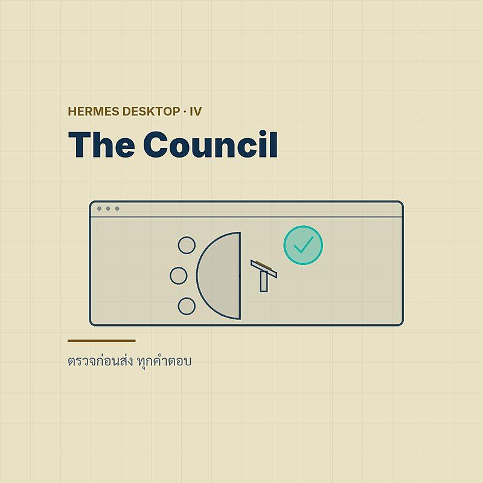
The Council — ตรวจก่อนส่ง ทุกคำตอบ
สร้าง council ให้ Hermes ตรวจคำตอบก่อนส่ง — Mixture of Agents preset, /review reviewer และ /goal contract ทีละคำสั่ง พร้อมต้นทุนที่ต้องรู้
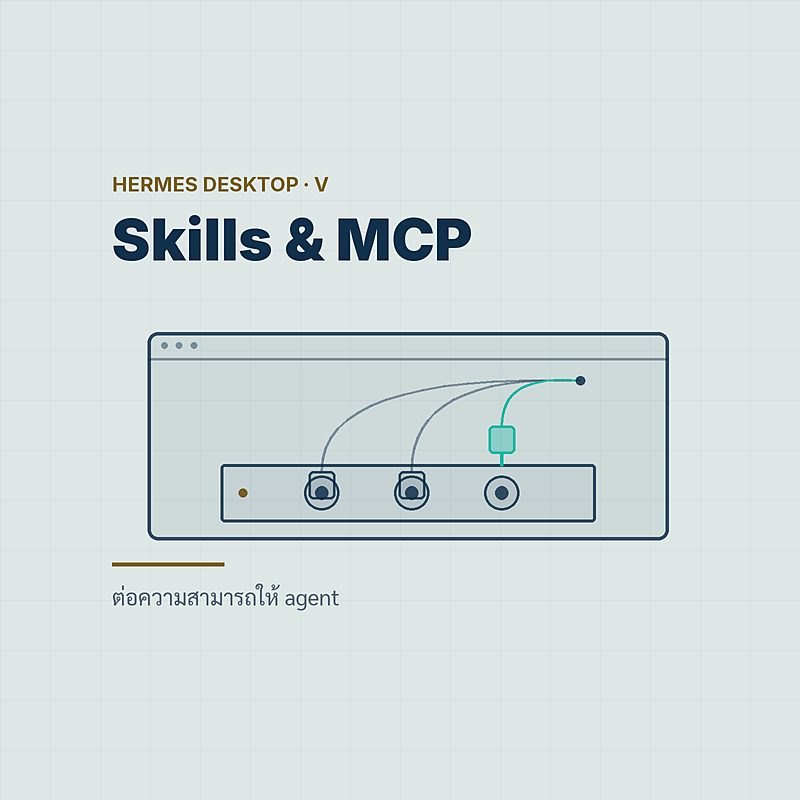
Skills, MCP & Memory — ต่อความสามารถให้ agent
ต่อความสามารถให้ Hermes Desktop — ติดตั้ง skill จาก hub, เพิ่ม MCP server และจัดการ MEMORY.md/USER.md จากหน้าจอและ config.yaml
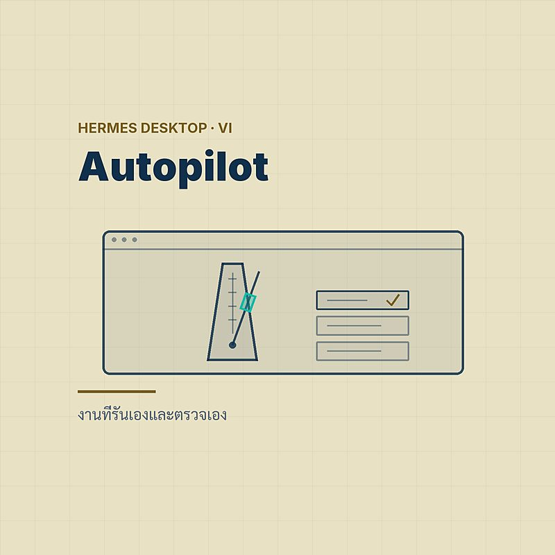
Automation & Agents — งานที่รันเองและตรวจเอง
ให้ Hermes ทำงานเองตามเวลาและตรวจงานเอง — Routines/cron, delegate_task, /agents, Command Center และ verify-on-stop ทีละขั้น
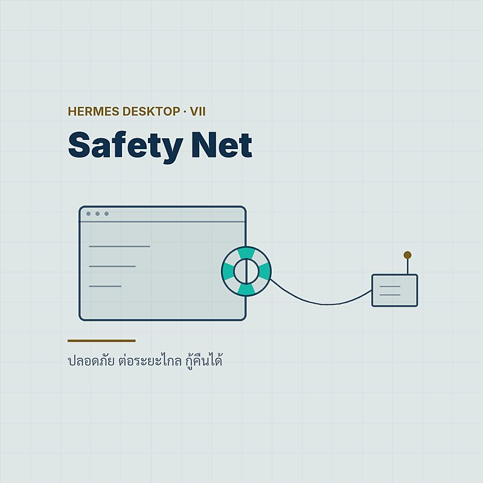
Safety, Remote & Recovery — ปลอดภัย ต่อระยะไกล กู้คืนได้
ตั้งค่า approvals, ต่อ Hermes Desktop เข้ากับเครื่องระยะไกล และกู้คืนเมื่อพัง — logs, diagnostics, TCC identity, update และ uninstall สามระดับ
AI Transformation for Organizations
Making AI an organizational core rather than a pilot — reframe, redesign, engineer, lead. ทำให้ AI เป็นแกนกลางขององค์กร ไม่ใช่โครงการนำร่อง — เปลี่ยนกรอบคิด ออกแบบใหม่ วิศวกรรม และนำการเปลี่ยนผ่าน
Reframe · เปลี่ยนกรอบคิด
01Six Layers, One Spine — AI Transformation ไม่ใช่การเพิ่ม AI
AI Transformation ไม่ใช่การเพิ่ม AI แต่คือการออกแบบระบบตัดสินใจใหม่ — หกชั้นขององค์กร หนึ่งแกน AI-as-a-Core แปดคำถาม และ Board Scorecard หกคอลัมน์
Cheaper Prediction — หน่วยของการเปลี่ยนผ่านคือการตัดสินใจ
เมื่อการคาดการณ์ถูกลง เศรษฐศาสตร์ของการตัดสินใจก็เปลี่ยน — แยก Prediction, Judgment, Action, Outcome แล้วดูว่าทำไมหน่วยของการเปลี่ยนผ่านคือการตัดสินใจ
Build a Learning System — วงจรการเรียนรู้ที่คู่แข่งซื้อไม่ได้
ความได้เปรียบที่ยั่งยืนไม่ใช่การเข้าถึงโมเดล แต่คือวงจรการเรียนรู้ห้าขั้น Observe, Preserve, Compare, Change, Verify พร้อม Canvas 75 นาที
Earn the Right to Increase Authority — วุฒิภาวะวัดที่ Workflow
วุฒิภาวะ AI ไม่ใช่จำนวน pilot แต่คือความสามารถที่พิสูจน์แล้วในระดับอำนาจและผลกระทบ — ห้าระดับจาก Explore ถึง AI-core พร้อม Exit gate และ Authority debt
Decision Portfolio — เลิกเขียน Use-Case List
Use-case list บอกว่าเทคโนโลยีอยู่ตรงไหน แต่ Decision portfolio บอกว่าอำนาจและความเสี่ยงสะสมที่ใด — จำแนกสามมิติ แล้วเลือก Scale, Contain, Redesign, Retire
Redesign · ออกแบบองค์กรใหม่
06Human in the Loop Is Not a Design — สี่เลนของกระบวนงานคนกับ AI
Human in the loop เป็นการควบคุมได้ก็ต่อเมื่อคนมีหลักฐาน เวลา ความสามารถ และอำนาจปฏิเสธ — ออกแบบใหม่ด้วยสี่เลน พร้อม Workflow teardown เจ็ดขั้น
What the Evidence Says — บันไดอำนาจ และวิธีวัดคน+AI ให้ตรงงานจริง
งานวิจัย 5,179 คน 758 คน และ 106 การทดลองบอกว่าไม่มี workflow สากล — วัดคนล้วน AI ล้วน และคนบวก AI บนงานจริง แล้ววางอำนาจตามบันไดสี่ขั้น
Redesign Tasks Before Headcount — สัญญาประชาคมของงานในยุค AI
Exposure ไม่ใช่ Displacement — ออกแบบงานระดับ task ด้วย Automate, Augment, Human authority วางทักษะสี่ระดับ และทำสัญญาประชาคมกับพนักงาน
The AI and Data Factory — หกบริการที่ทำให้ use case ถัดไปถูกลง
โรงงาน AI และข้อมูลไม่ได้ผลิตโมเดล แต่ผลิตชิ้นส่วนที่ใช้ซ้ำได้ — หกบริการ หนึ่งแถบควบคุมร่วม และ Minimum production package ก่อนปล่อยทุกครั้ง
Federated by Design — ใครกำหนดมาตรฐาน สร้าง อนุมัติ และดำเนินงาน
ทั้ง CoE ที่สร้างทุกอย่างและทีมโดเมนที่เลือกเองล้วนไปไม่รอด — Federated model ด้วยสี่คำกริยา Set standards, Build, Approve, Operate และผนังสิทธิ์ 11 ขั้น
Engineer · วิศวกรรมแกนกลาง
11When Is AI the Core? — อำนาจ × ความขาดไม่ได้ และ Context ในฐานะโปรแกรม
AI-core ไม่ใช่ซอฟต์แวร์ที่เรียกโมเดล แต่คือ runtime ที่โมเดลมีอำนาจสูงและขาดไม่ได้ — จำแนกด้วย 2×2 ทดสอบด้วยการถอดโมเดล และผูกบริบทไว้ใน Manifest เดียว
Assurance Contract — เขียนสัญญาเป็นรายคุณสมบัติ
"ปลอดภัยและน่าเชื่อถือ" ไม่ใช่สัญญา — Assurance contract ระบุรายคุณสมบัติว่าอะไรบังคับได้เชิงโครงสร้าง อะไรประเมินได้ ใครเป็นเจ้าของ และเกณฑ์เท่าไร
Five Rails and the Effect Guard — ข้อเสนอไม่ใช่ผลจริง
โมเดลเสนอ ระบบกำหนดแน่นอนอนุมัติ สถานะจริงพิสูจน์ — รางควบคุมห้าชั้นกับ Effect guard เจ็ดข้อ พร้อมผลการทดสอบ 517 ครั้งและขอบเขตของมัน
Five Tracks, One Release Gate — ปล่อยด้วยหลักฐาน ไม่ใช่วันที่
การปล่อยระบบ AI คือการตัดสินใจเชิงบริหาร ไม่ใช่วันที่ — ประเมินห้าเส้นทางรวมภาษาไทย แล้วผ่านด่านเดียวสู่ Promote, Canary, Hold หรือ Reject
Evidence Before Change — จากเหตุการณ์ผิดพลาดสู่ระบบที่ดีขึ้น
อย่าลดเหตุการณ์ผิดพลาดเหลือแค่ "โมเดล hallucinate" — วงจรแปดขั้นบนหลัก Evidence before change พร้อม Trace schema เก้ากลุ่มและกรณี CX-REFUND-01
Lead · นำการเปลี่ยนผ่าน
16One Evidence System — PDPA, ETDA และ EU AI Act บนหลักฐานชุดเดียว
คณะกรรมการที่ไม่มีสิทธิ์ตัดสินใจไม่ใช่ governance — แผนที่หน้าที่ตาม PDPA แนวทาง ETDA และ EU AI Act เชื่อมทุกกรอบเข้ากับหลักฐานชุดเดียวเจ็ดชิ้น
Suppliers, Cost and Footprint — outsource ความรับผิดชอบไม่ได้
Outsourcing เทคโนโลยีไม่ได้ outsource ความรับผิดชอบ — 11 ข้อสัญญากับ supplier รวมทางออก ต้นทุนและ footprint ต่อผลลัพธ์ที่สำเร็จ ไม่ใช่ต่อ token
The First 90 Days — Align, Design, Build ก่อนขยายอะไรทั้งสิ้น
ไม่มีกฎหมายใดกำหนดลำดับ 180 วัน แต่หลักฐานต้องมาก่อนการขยาย — Align, Design, Build พร้อมห้องตกลงที่กำหนดเจ้าของ เกณฑ์ และเงื่อนไขหยุดล่วงหน้า
Days 91–180 — Prove, Prepare, Decide: อะไรสมควรได้ขยาย
Login ไม่ใช่การนำไปใช้ และ usage ไม่ใช่คุณค่า — Prove, Prepare, Decide ปล่อยแคบ ซ้อมทางหยุด แล้วตัดสิน Scale, Reshape, Hold หรือ Stop ด้วย Board scorecard
Learning Velocity — ตอบแปดคำถามด้วยหลักฐาน แล้วเริ่มแคบ
ปิดซีรีส์ด้วยแปดคำถามที่ต้องตอบด้วยหลักฐาน แผนที่ masterclass 52 นาที คำถามสำหรับผู้นำ 17 ข้อ และอภิธานศัพท์สองภาษา แล้วเริ่มแคบจากหนึ่งการตัดสินใจ
Hermes Agent in Practice
Adopting Nous Research's open-source agent harness in a real organization, from first install to production. คู่มือ Hermes Agent ฉบับลงมือจริง — ตั้งแต่ติดตั้ง ทีม agent ความจำ ความปลอดภัย จนถึง production

Hermes 101 — Agent ที่เติบโตไปกับเรา
ทำความรู้จัก Hermes Agent จาก Nous Research ตั้งแต่สถาปัตยกรรม gateway เดียวและการติดตั้งในบรรทัดเดียว ไปจนถึง Nous Portal และการย้ายจาก OpenClaw ด้วย hermes claw migrate

Agent Teams — Subagents, Kanban และสังคมของ Bots
กางแผนที่สี่ชั้น multi-agent ของ Hermes — จาก delegate_task ที่แตกงานให้ subagent, บอร์ด Kanban บน SQLite ที่ทำงานให้จบจริง ถึง Bot Mode สังคมของ bots พร้อมบันไดตัดสินใจว่างานแบบไหนควรใช้ชั้นไหน

Memory — ความจำที่มีขอบเขตโดยตั้งใจ
Hermes จำกัดความจำถาวรไว้ใต้ 3,600 ตัวอักษรโดยตั้งใจ — เจาะกลไกสองไฟล์ + snapshot แช่แข็ง, FTS5 session search, memory providers ทั้งแปดตัว และคำสั่งเดียวที่รวบ daily logs ของ OpenClaw เป็นไฟล์เดียว

Security — Isolation คือแนวป้องกันเดียวที่จริง
Hermes ยอมรับตรง ๆ ใน SECURITY.md ว่า isolation ระดับ OS คือแนวป้องกันเดียวที่จริง — ไล่ดูแนวป้องกันทุกชั้น บันทึก CVE หกเดือนแรก และเหตุการณ์ YOLO mode ที่กระทรวงการคลังไทย

Integrations — หนึ่ง Gateway เชื่อมทุกช่องทาง
Gateway เดียวเชื่อม 27+ แพลตฟอร์ม — จาก Telegram ถึง MCP สองทิศทาง, Browser Use และ Nous Portal ในมุมมองของคนที่รัน OpenClaw มาก่อน

Skills — ทักษะที่เขียนตัวเองได้
Hermes ให้ agent เขียน SKILL.md ของตัวเองผ่าน skill_manage มี Curator ดูแลวงจรชีวิต และมี write_approval ให้มนุษย์ตรวจก่อน merge — ไล่ทั้งระบบตั้งแต่มาตรฐานเปิด agentskills.io จนถึงการย้าย skills จาก OpenClaw

Production — ถูก เสถียร และออนไลน์ตลอดเวลา
ปิดแกนหลักของซีรีส์ด้วยคู่มือรัน Hermes บน production จริง — จาก VPS ราคา $5 ถึง Docker ที่รอดทุก reboot, ชุดเครื่องมือ backup และ rollback, การคุมค่า model ด้วย Nous Portal และคำตอบของคำถามใหญ่ว่าควรย้ายทั้งองค์กรจาก OpenClaw หรือยัง

Automation — งานที่รันเองตามเวลา ตามเหตุการณ์ และไม่เปลือง token
cron ที่จำงานครั้งก่อนได้และไม่ปลุก LLM เมื่อไม่มีอะไรเปลี่ยน webhook ที่ตรวจลายเซ็นก่อนเชื่อ hook ขาออก blueprint และ API server — ห้าประตูที่งานเดินเข้าหา Hermes โดยไม่ต้องมีใครสั่ง

Models & Cost — จาก Nous Portal ถึง GPU ของเราเอง
บันไดห้าขั้นจาก Nous Portal ถึง GPU ของเราเอง — fallback chain และ credential pool, เศรษฐศาสตร์ของ prompt cache, ตัวเลขที่ /insights วัดได้และวัดไม่ได้, การรัน open-weight ในบ้าน และคำถาม PDPA ว่าข้อมูลขององค์กรไปอยู่ที่ไหน

Desktop & Fleet — หนึ่ง backend ทุกเครื่องในองค์กร
ต่อทุก laptop ในองค์กรเข้า hermes serve ตัวเดียว — remote gateway, OIDC sign-in, profile ต่อบทบาทที่แจกด้วย git, managed scope สำหรับฝ่าย IT, อัปเดตทั้ง fleet จากปุ่มเดียว และข้อจำกัดที่ CTO ต้องรู้ก่อนอนุมัติ
OpenClaw for Organizations
Building AI systems that think, remember and act — a seven-part course plus standalone deep dives. สร้างระบบ AI ที่คิด จำ และลงมือทำเองได้ — คอร์ส 7 ตอน พร้อมบทความเดี่ยวเจาะลึก

OpenClaw 101 — จาก Chatbot สู่ AI Operating System
ทำไม ChatGPT ไม่พอ? รู้จัก OpenClaw — AI ที่มี memory, personality, tools และทำงานให้จริงๆ พร้อมวิธีติดตั้งและ Use Cases สำหรับองค์กร

Agent Teams — สร้างทีม AI เฉพาะทางแบบบริษัทจริง
Multi-agent architecture, specialist agents 45 ตัว, model routing Opus vs Sonnet, cost ~$400\/mo — สร้างทีม AI ที่ทำงานจริงได้แบบบริษัท

Memory & Knowledge Management — ให้ Agent จำได้และเรียนรู้
3-layer memory architecture, daily logs, MEMORY.md, Obsidian vault, ChromaDB semantic search, heartbeat system — ให้ AI จำและเรียนรู้จากประสบการณ์จริง

Security & Access Control — ปกป้องข้อมูลองค์กร
Sandbox isolation, prompt injection defense, data de-identification, secret management, GUEST MODE — ปกป้อง AI Agent ไม่ให้กลายเป็นช่องโหว่

Integrations & Workflows — เชื่อมต่อทุกระบบในองค์กร
Telegram, Google Workspace, GitHub, Database, Cron, n8n, Home Assistant — เชื่อม AI Agent เข้ากับระบบจริงทั้งหมด

Skills & Automation — สอน Agent ทำงานใหม่ได้ไม่จำกัด
ClawHub marketplace, custom skill creation, SkillGuard security, ClawFlows pipelines — สร้างความสามารถใหม่ให้ AI ได้ไม่มีขีดจำกัด

Production Deployment — จาก Prototype สู่ระบบจริง
VPS setup, Docker deployment, monitoring, backup, security hardening, cost tracking — lessons จากการรัน 45 agents ใน production จริง
Standalone posts · บทความเดี่ยว

Self-Transferring OpenClaw Bot — ย้าย AI Agent ข้ามเครื่องแบบไม่พลาด
คู่มือย้าย bot จาก VPS Ubuntu ไป Mac Studio แบบ step-by-step — backup, transfer, restore พร้อม self-check script ให้ bot ตรวจตัวเอง

Idle Self-Improvement — ให้ AI Agent ดูแลระบบเองเมื่อว่าง
เปลี่ยนเวลาว่างของ AI Agent ให้ตรวจสุขภาพระบบ วิเคราะห์ Obsidian vault และค้นหาปัญหาก่อนที่คุณจะเจอเอง — ตั้งค่า 10 นาที

Obsidian + AI Agent = สร้างสมองที่สองที่คิดจากสิ่งที่เราสั่งสมมา
จาก Obsidian vault สู่ AI ผู้ช่วยแบบ JARVIS — memory system, proactive behavior, always-on agent และ case study จาก OpenClaw ที่รันจริง

Beyond Plugins: How I Actually Use OpenClaw as a Production AI Assistant
A year of running Arthur in production — architecture over plugins, memory systems, healthcare analytics with 4.7M records, and building AI that actually works.

Claude Code Architecture Deep Dive
เจาะลึกสถาปัตยกรรม Claude Code — Tools system, Agent loops, MCP protocol, Context management และการออกแบบ AI ที่ทำงานจริงได้

OpenClaw Memory Architecture — ออกแบบความจำให้ Agent ทำงานต่อเนื่อง
เจาะโครงสร้าง memory แบบ layered: Identity, Workspace Config, Daily Notes, Long-term Memory, governance boundary และ anti-patterns ที่ควรเลี่ยง
DevOps & Vibe Coding
Modern DevOps from Git fundamentals to Kubernetes, CI/CD and production-ready infrastructure — in 24 steps. DevOps ยุคใหม่ตั้งแต่ Git พื้นฐานถึง Kubernetes, CI/CD และ infrastructure พร้อมใช้จริง — 24 ตอนตามลำดับ

Git Branching — แตกกิ่งก้านสาขาให้เป็นระบบ
เรียนรู้การใช้ Branch ใน Git ตั้งแต่พื้นฐาน ไปจนถึง Merge, Conflict, และ Branching Strategy ยอดนิยมอย่าง Git Flow, GitHub Flow

CI/CD Pipeline — ส่ง Code ขึ้น Production แบบอัตโนมัติ
เรียนรู้ CI/CD Pipeline ตั้งแต่พื้นฐาน Build, Test, Deploy อัตโนมัติ ไปจนถึง GitHub Actions, deployment strategies, และ Best Practices

Docker Containers vs VMs — ต่างกันยังไง ใช้ตัวไหนดี?
เปรียบเทียบ VM กับ Docker Container, เรียนรู้ Dockerfile, Image, Container, Docker Compose และเมื่อไหร่ควรใช้ตัวไหน

API Request Lifecycle — เมื่อกด Send เกิดอะไรขึ้นบ้าง?
เข้าใจ API Request Lifecycle ตั้งแต่ Client ส่ง Request ไปจนถึง Server ตอบกลับ พร้อม HTTP Methods, Status Codes และตัวอย่างจริง

Kubernetes — จัดการ Container ให้เป็นระบบด้วย K8s
เรียนรู้ Kubernetes ตั้งแต่พื้นฐาน Pod, Service, Deployment ไปจนถึง Scaling, Self-healing และการ deploy จริง

Networking พื้นฐานสำหรับ DevOps — รู้จักเครือข่ายก่อน Deploy
เรียนรู้ Networking พื้นฐานที่ DevOps ต้องรู้ ตั้งแต่ TCP/IP, DNS, Ports, Firewall ไปจนถึง Load Balancer และ Reverse Proxy

Infrastructure as Code — จัดการ Server ด้วย Terraform & Ansible
เรียนรู้ IaC ตั้งแต่แนวคิด ไปจนถึง Terraform สร้าง infrastructure และ Ansible จัดการ configuration อัตโนมัติ

Monitoring & Observability — รู้ทุกอย่างที่เกิดขึ้นใน System
เรียนรู้ Metrics, Logs, Traces ไปจนถึง Prometheus, Grafana, ELK Stack และการตั้ง Alert แจ้งเตือนก่อนระบบล่ม

Linux Command Line — คำสั่งพื้นฐานที่ DevOps ต้องรู้
คำสั่ง Linux ที่ DevOps ใช้ทุกวัน ตั้งแต่ไฟล์, process, permission, networking ไปจนถึง shell scripting และ cron jobs

DevSecOps — Security พื้นฐานที่ DevOps ต้องรู้
เรียนรู้ OWASP Top 10, Secrets Management, Container Security, SSL/TLS, CI/CD Security Pipeline และ Server Hardening

Software Testing — ทดสอบยังไงให้มั่นใจก่อน Deploy
เรียนรู้ Unit Test, Integration Test, E2E Test, TDD, Code Coverage และ Testing ใน CI/CD Pipeline

Docker Compose — จัดการหลาย Containers ด้วยไฟล์เดียว
เรียนรู้ Docker Compose ตั้งแต่ services, volumes, networks ไปจนถึง multi-environment, health checks และ production patterns

GitOps & ArgoCD — Git-driven Deployments ที่ทุกคนต้องรู้
เรียนรู้ GitOps Principles, ArgoCD, Helm Charts, Kustomize, Sealed Secrets และ App-of-Apps Pattern

Cloud Architecture — ออกแบบระบบบน Cloud ให้แข็งแกร่ง
เรียนรู้ AWS/GCP/Azure, Well-Architected Framework, VPC, Serverless, High Availability และ Cost Optimization

SRE — Site Reliability Engineering ที่ DevOps ต้องรู้
เรียนรู้ SLI/SLO/SLA, Error Budgets, Incident Management, Postmortem, Toil Reduction และ Chaos Engineering

GitHub Actions — Automate ทุกอย่างใน CI/CD Pipeline
เรียนรู้ Workflows, Triggers, Secrets, Matrix Builds, Caching, Reusable Workflows, Security Scanning และ Self-hosted Runners

Code Quality & Review — เขียน Code ดีๆ ที่ทีมอยากอ่าน
เรียนรู้ Linting, SOLID Principles, Code Smells, Static Analysis, SonarQube, Quality Gates และ Clean Code Practices

Automated Testing with GitHub — ทดสอบอัตโนมัติทุก Push
เรียนรู้ Static Analysis, Unit Tests, Integration Tests, E2E (Playwright), Security Scanning, Coverage Gates และ Complete Pipeline

Database Design & SQL — ออกแบบฐานข้อมูลที่ดีและเขียน SQL อย่างมืออาชีพ
เรียนรู้ Database Design, Normalization, SQL essentials, JOINs, Indexing, Migrations, Security และ ORM vs Raw SQL สำหรับ Developer ทุกระดับ

Authentication & Authorization — ระบบยืนยันตัวตนและจัดการสิทธิ์อย่างปลอดภัย
เรียนรู้ Authentication vs Authorization, Password Security, JWT, OAuth 2.0, MFA/2FA, RBAC, และ Security Best Practices สำหรับ Developer ทุกระดับ

Web Architecture & Design Patterns — ออกแบบระบบให้ Scale ได้และดูแลง่าย
เรียนรู้ Monolith vs Microservices, MVC, Layered Architecture, Clean Architecture, REST vs GraphQL vs gRPC, Event-Driven Architecture, Message Queues และ Design Patterns สำหรับ Developer ทุกระดับ

Frontend Performance & Modern Frameworks — เพิ่มความเร็วและเลือก Framework ที่ใช่
เรียนรู้ CSR vs SSR vs SSG vs ISR, React vs Vue vs Svelte, Core Web Vitals, Image Optimization, Bundle Optimization, Caching, PWA และ CSS/Font Optimization

Deployment & Hosting Strategies — จาก Code สู่ Production
เปรียบเทียบ Vercel, Netlify, Railway, VPS, Cloud — พร้อม SSL, DNS, CDN, Deployment strategies และ Production setup

Vibe Coding in DevOps Process — ใช้ AI ให้เร็วขึ้นแบบไม่พังระบบ
คู่มือใช้งาน Vibe Coding ใน DevOps ตั้งแต่ plan → build → verify → release พร้อม use cases, guardrails และ prompt patterns ที่ใช้ได้จริง